23
Ponencias en programa
La edición fundacional. Dos días en los que CUCEA reunió al Senado de la República, a la Rectoría del CUCEA y, a lo largo del programa, a las presidencias del Supremo Tribunal de Justicia del Estado de Jalisco, de COFECE, de INAI, de la Academia Mexicana de Ciberseguridad y Derecho Digital (AMCID), de la Academia Mexicana de Derecho Informático (AMDI) y de ALGDETIC, junto con la presidencia internacional de la Federación Iberoamericana de Asociaciones de Derecho e Informática (FIADI). Por primera vez de manera oficial en Jalisco, la conversación entre el derecho mexicano y las tecnologías que están reescribiendo todo: inteligencia artificial, ciberseguridad, blockchain, ADR digital y privacidad.
El 14 de noviembre de 2023, el Auditorio Central de CUCEA se convirtió en algo poco habitual: un punto de encuentro real entre poder legislativo, judicial, ejecutivo, academia, sector privado y sociedad civil, todos convocados alrededor de la misma pregunta. La Senadora Alejandra Lagunes Soto Ruiz abrió desde lo legislativo y el Mtro. Luis Gustavo Padilla Montes, Rector del CUCEA, selló el respaldo institucional de la Universidad de Guadalajara. A partir de ahí, dos días intensos de paneles que tocaron lo que entonces apenas se nombraba: regulación de ciberseguridad, justicia alternativa en línea, auditorías algorítmicas, privacidad mental y sucesiones digitales.
El Foro nació con una vocación clara: no ser un congreso académico más. Desde la primera edición se buscó el cruce real entre quienes legislan, quienes juzgan, quienes regulan y quienes investigan. A lo largo de los dos días participaron, en distintos paneles y ponencias, las presidencias del Supremo Tribunal de Justicia del Estado de Jalisco (Magdo. Daniel Espinoza Licón), de la Comisión Federal de Competencia Económica (COFECE) (Dra. Andrea Marvan Saltiel), del Instituto Nacional de Transparencia, Acceso a la Información y Protección de Datos Personales (INAI) (Mtra. Blanca Lilia Ibarra), de la Academia Mexicana de Ciberseguridad y Derecho Digital (Dr. Ernesto Ibarra Sánchez), de la Academia Mexicana de Derecho Informático (Mtro. Joel Gómez Treviño) y de la Red Latinoamericana de Gobierno, Derecho y Nuevas Tecnologías — ALGDETIC (Ing. Miguel Ángel Gaspar Villalba), junto con la presidencia internacional de FIADI (Dra. Bibiana Luz Clara), la Federación Iberoamericana de Asociaciones de Derecho e Informática. Sumadas a representantes de California State University Dominguez Hills, la Universidad Alfonso X El Sabio, la Universidad de Newcastle y el CIDE, convirtieron a CUCEA en una de las pocas sedes mexicanas donde, ese año, se discutió con esa profundidad lo que el derecho aún no sabía contestarle a la tecnología.
De esta edición salió el compromiso institucional de continuidad. El Foro dejó de ser una idea para convertirse en un evento académico con vocación de permanencia, organizado por los actuales miembros del Cuerpo Académico UDG-CA-1236 «Derecho y Tecnología» —entonces aún en proceso de conformación—, junto con la Academia de Derecho Económico Empresarial, el Departamento de Ciencias Sociales y Jurídicas y la Maestría en Resolución de Conflictos del CUCEA, bajo la dirección académica permanente del Dr. Juan Emmanuel Delva Benavides.
La I edición trazó por primera vez los ejes que después se consolidarían como columna vertebral del Foro. La curaduría buscó cubrir el espectro completo: desde el debate legislativo en curso hasta los casos de uso emergentes en tribunales.
La curación de la I edición preservó el balance que después se volvería marca de la casa: academia + sector judicial + legislativo + regulador + sector privado + organismos internacionales. Lo que sigue es una selección representativa de quienes efectivamente participaron; el programa completo cubrió 23 intervenciones.
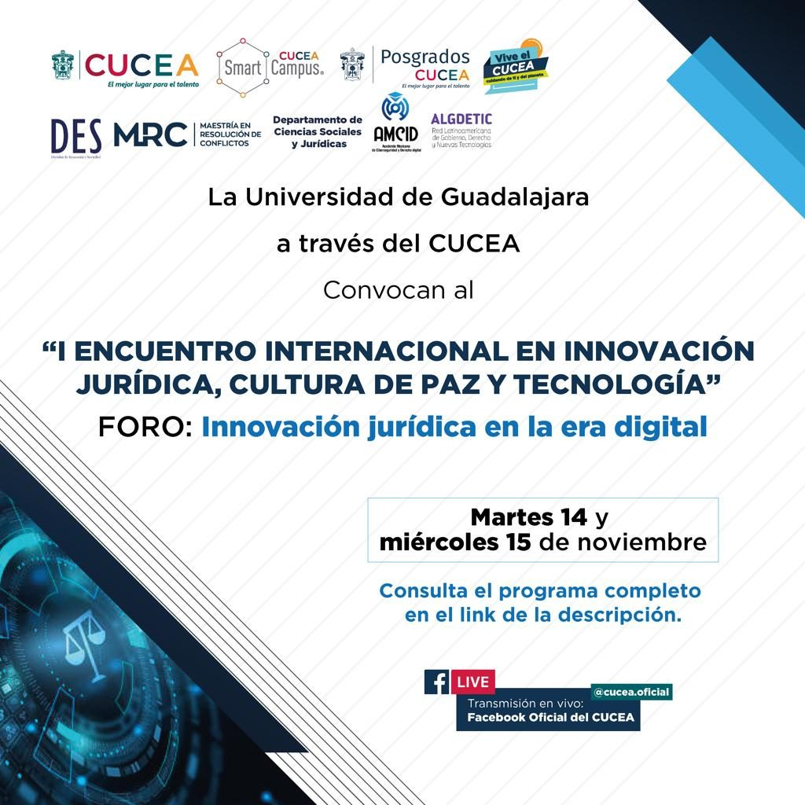
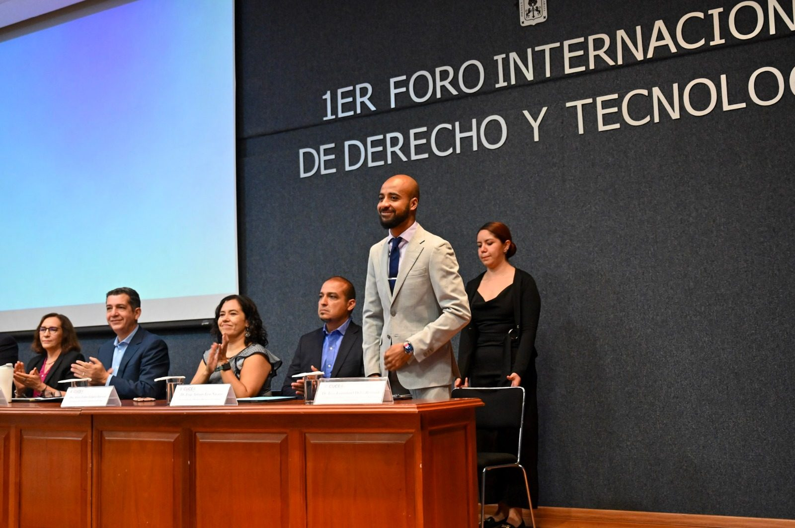
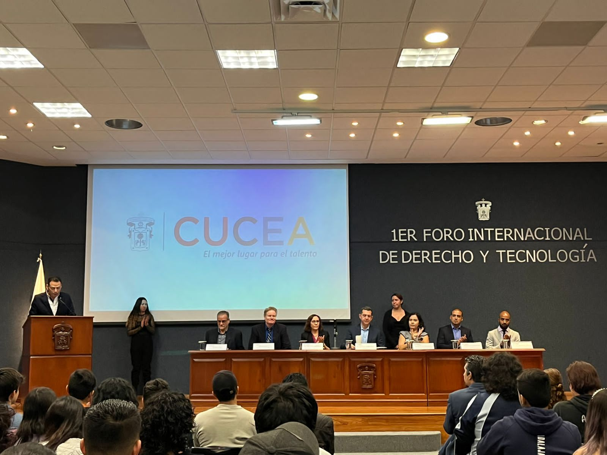
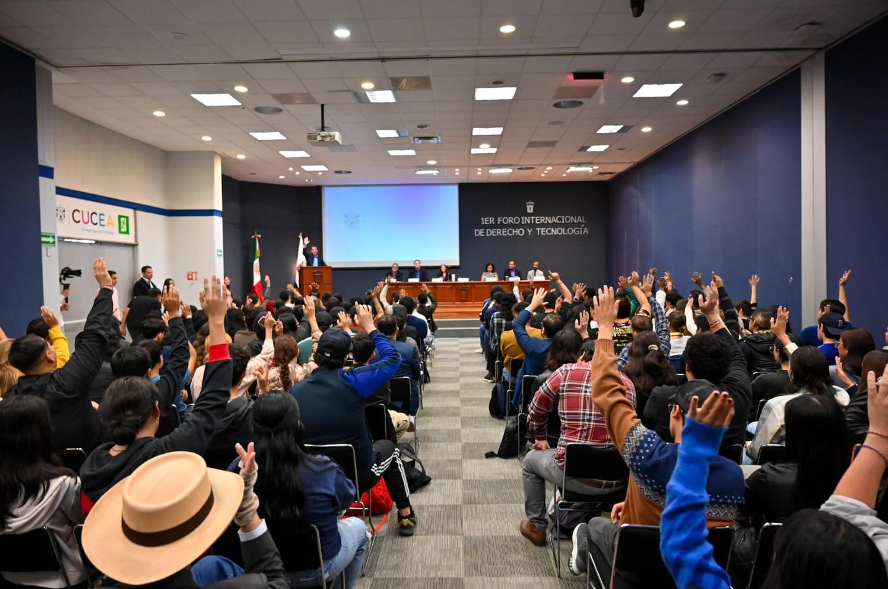
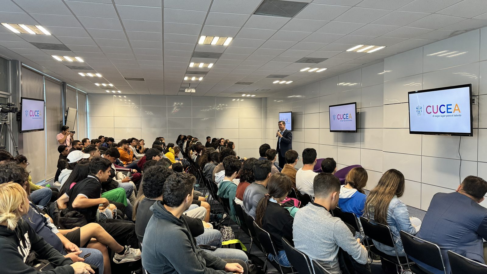
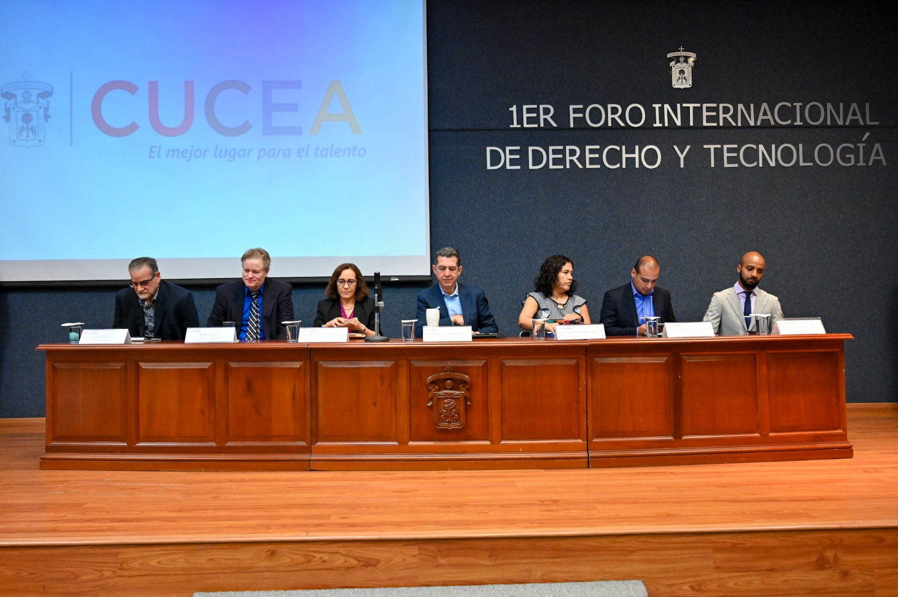
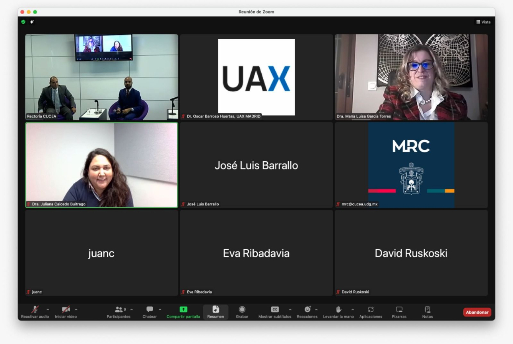
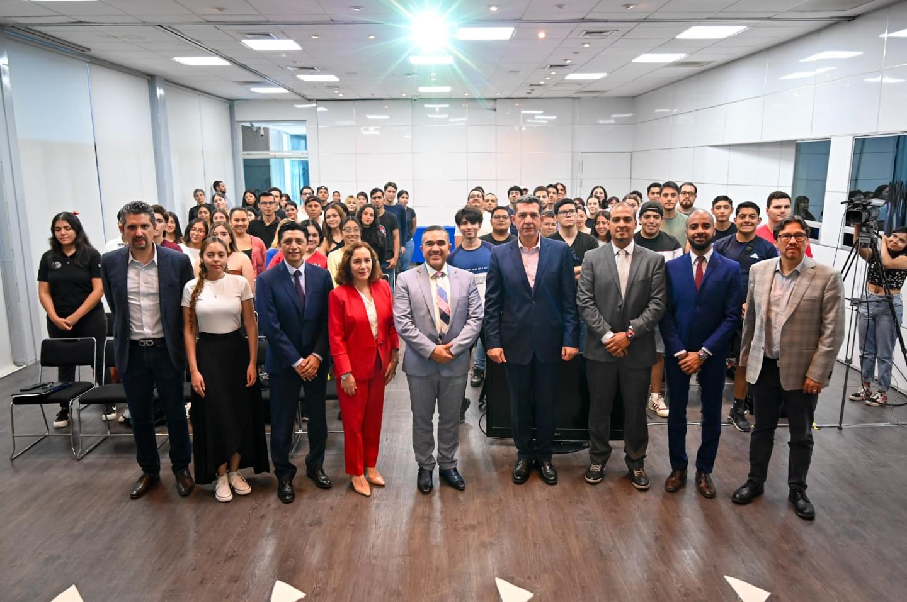
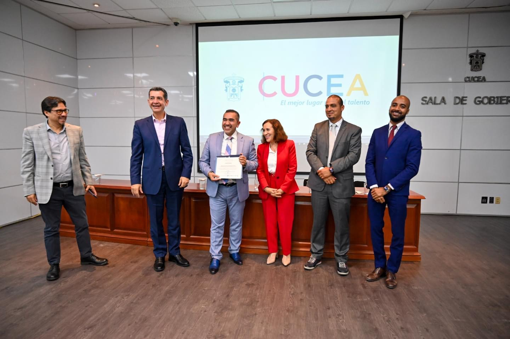
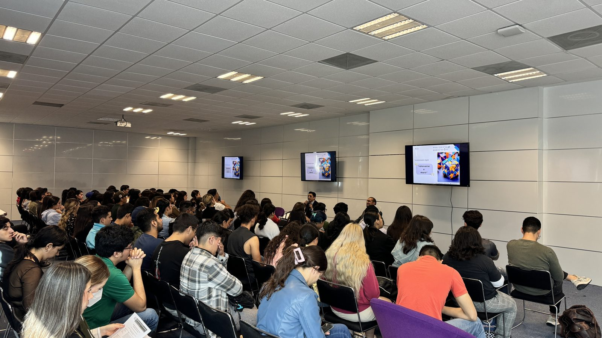
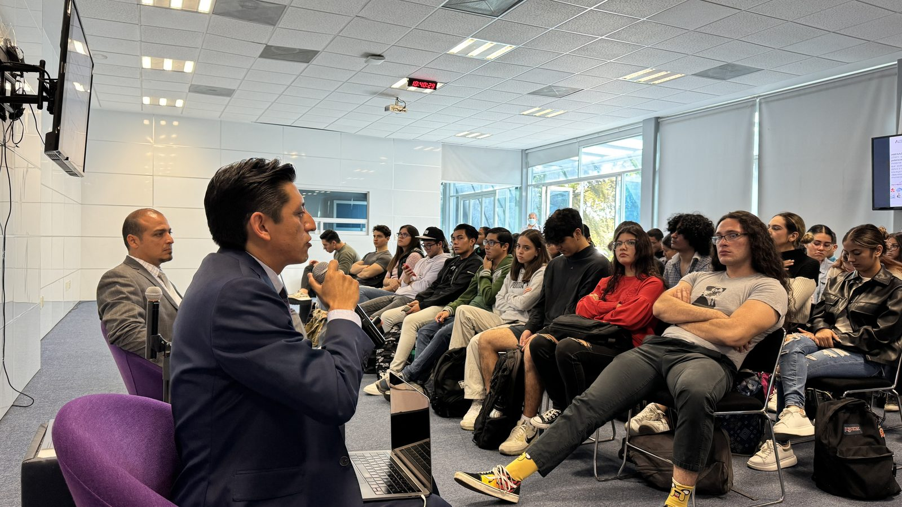
La I edición no fue un evento que se agotara en su programa. Sentó cuatro cimientos que las ediciones posteriores han ido capitalizando.
A lo largo del programa participaron las presidencias de FIADI, ALGDETIC, AMCID, AMDI, COFECE, INAI y STJ Jalisco. Una densidad institucional difícil de repetir en una sola sede académica.
Articulación operativa entre CUCEA, FIADI, ALGDETIC, AMCID, AMDI, STJ Jalisco, COFECE e INAI como red de continuidad para las ediciones siguientes.
Primer trazo de los ejes temáticos que en la II edición se consolidan a 7 como columna vertebral del Foro, y que en la IV se expanden a 9 con la incorporación de salud digital e IA agéntica.
Respaldo explícito de la Rectoría del CUCEA al Foro como evento académico permanente, oficializado desde esta edición.
Presencia desde el día uno de ponentes de Estados Unidos, España, Reino Unido, Argentina, Colombia y Paraguay, marcando la pauta del carácter iberoamericano del Foro.
Consolidación del Dr. Juan Emmanuel Delva Benavides como Director Académico permanente del Foro, rol que sostiene la continuidad editorial y curatorial de las ediciones siguientes.
Esta edición sembró el equipo de profesores-investigadores que, dos años después, formaría el Cuerpo Académico UDG-CA-1236 «Derecho y Tecnología», hoy organizador formal del Foro.